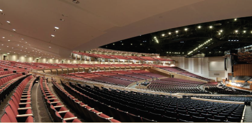

Apostle Spotlight

A quick spotlight of each apostle of the Jesus Christ in their calling order.
Favorite Devotionals

Brigham Young University-Idaho has many great and inspirational speakers each week. Here are some of my favorites!
Grid flags
Here is a brief demonstration of the many ways grid patterns in CSS can create international flags!
Positioning

Here is a great way to use grid positioning to move and manipulate objects on the screen to create all sorts of patters!
Prophet Cards

A special look at the living prophet on the Earth today, President Dallin H. Oaks.